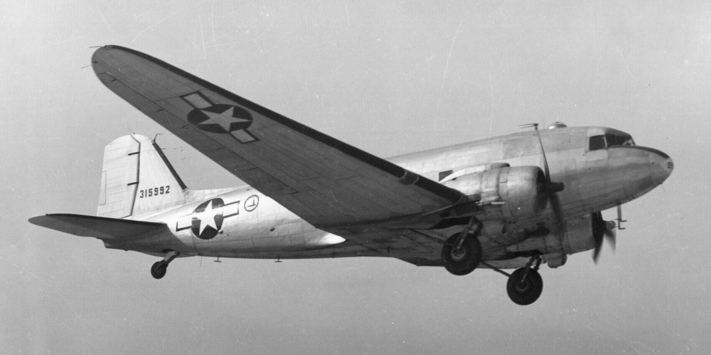
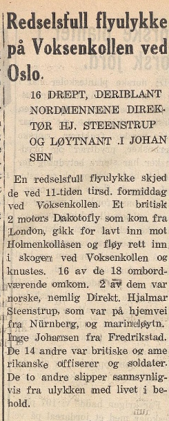

Da et militærfly styrtet i Voksenkollåsen
Коли військовий літак розбився на схилі Voksenkollåsen
Klokken 11.04 om formiddagen, tirsdag 18. desember 1945, dundret et stort militært transportfly inn i sydsiden av Voksenkollåsen og tok fyr like ved ruinene av det nedbrente Anne Kures hotell. Av menneskene om bord overlevde bare to. En uke før jul, midt i den første fredsvinteren etter krigen, ble skogen her et havaristed.

Flyet som ble omdirigert
Maskinen var en C-47 Dakota tilhørende Royal Canadian Air Force, No. 435 Transport Squadron. Den hadde lettet fra militærbasen RAF Down Ampney i England og skulle via København til Fornebu. Men Fornebu lå under et lavt skydekke og var stengt. Et nytt instrumentinnflygingssystem var faktisk under montering på flyplassen, men ennå ikke tatt i bruk – det kunne ha hjulpet flygerne denne dagen. I stedet ble flyet omdirigert til Gardermoen, den eneste andre store landingsplassen i Oslo-området.
Veien dit gikk over åsene i Vestre Aker. Med tunge føreforhold i lufta kom flyet aldri høyt nok. Det fløy inn i sydsiden av Voksenkollåsen, brakk trærne foran seg og tok fyr.
De første på stedet
Vaktmester Juelsen oppholdt seg i et lite hus like ved det nedbrente hotellet. Han hørte en kraftig motordur, fulgt av lyden av trær som knakk, og løp mot lyden. Da han kom fram, sto flyvraket i brann. Naboer kom raskt til, men det var lite de kunne gjøre for de overlevende før redningsmannskapene var på plass. De vanskelige føreforholdene gjorde at brannvesenet brukte rundt 30 minutter fra Smestad brannstasjon – dobbelt så lang tid som normalt.
Sykebiler fra blant annet Ullevål kom fram, men transporten av de overlevende ut av skogen og videre til sykehus tok tid. Kildene spriker noe på de eksakte tallene: Wikipedia og Oslo Byleksikon oppgir 19 om bord og to overlevende, mens Vinderen historielags egen gjennomgang av avisene fra 1945 skriver 18 om bord og 16 omkomne. Felles for alle er at bare to mennesker overlevde – de amerikanske løytnantene Nelson og Kurt Wiesman.
To nordmenn på vei hjem til jul
Blant de omkomne var to nordmenn, begge på vei hjem. Den ene var motstandsmannen og direktøren Hjalmar Steenstrup (født 1890). Han hadde hatt en sentral rolle i hjemmefrontens ledelse, blitt arrestert av tyskerne og sittet i konsentrasjonsleir til frigjøringen i april 1945. Nå var han et av Norges vitner i Nürnberg-prosessen og på hjemreise derfra. Han skulle egentlig ha fløyet rute fra København, men det flyet var innstilt – så han fikk «haike» med det allierte militærflyet i stedet.
Den andre var marineløytnant Inge Johansen (født 1921). Han var på vei hjem fra England for å feire jul med familien for første gang siden 1936. De to nordmennene er ikke gravlagt sammen med flygerne; femten av de omkomne fra mannskapet hviler på krigsgravfeltet for falne fra Storbritannia og samveldelandene på Vestre gravlund.

Hvorfor gikk det galt?
Avisene nevnte ingen årsak da – det var for tidlig. Men alt peker mot ising. I underkjølt regn legger det seg et lag is på vingene som ødelegger løfteevnen, og motorene mister effekt. Vitnene hørte kraftig motordur idet flyet kom inn over åsen – som om motorene gikk for fullt, men ikke maktet å løfte maskinen over toppen. At ruteflyet fra København var innstilt samme dag, peker også mot elendig flyvær i Oslo-området. Den mest sannsynlige forklaringen er at flyet rett og slett ikke klarte å stige høyt nok til å komme over Voksenkollen.
Havaristedet i dag
Vrakrestene ble ryddet bort allerede i 1945, men sporene finnes fortsatt. Går du inn fra Hospitsveien langs stien mot Lillevann, kan du se en åpning i skogen der vegetasjonen er en annen enn rundt – og stubber av grove trær som ble kuttet eller skadet av flyet. Havaristedet ligger bare 10–15 meter sydøst for gjerdet rundt Voksenkollveien 28. Står du her en stille desemberdag, er det ikke vanskelig å tenke seg motorduren gjennom skogen for over åtti år siden.
О 11:04 ранку у вівторок, 18 грудня 1945 року, великий військовий транспортний літак врізався в південний схил Voksenkollåsen і спалахнув просто біля руїн згорілого готелю Anne Kures. З людей на борту вижили лише двоє. За тиждень до Різдва, посеред першої мирної зими після війни, цей ліс став місцем катастрофи.
Літак, який перенаправили
Машина — C-47 Dakota — належала Королівським військово-повітряним силам Канади, 435-й транспортній ескадрильї. Вона злетіла з військової бази RAF Down Ampney в Англії й мала летіти через Копенгаген до Fornebu. Але Fornebu лежав під низькою хмарністю й був закритий. Нова система заходу на посадку за приладами на той час саме монтувалася в аеропорту, та ще не була введена в дію — вона могла б допомогти екіпажу цього дня. Натомість літак перенаправили на Gardermoen, єдиний інший великий аеродром в околицях Осло.
Шлях туди пролягав над пагорбами Vestre Aker. За важких умов у повітрі літак так і не набрав достатньої висоти. Він врізався в південний схил Voksenkollåsen, ламаючи дерева перед собою, і спалахнув.
Перші на місці
Сторож Juelsen перебував у невеликому будинку поблизу згорілого готелю. Він почув потужний гул моторів, а за ним — тріск дерев, і побіг на звук. Коли він добіг, уламки літака вже палали. Сусіди швидко прибігли, але до приїзду рятувальників мало чим могли зарадити тим, хто вижив. Через важкі умови пожежники витратили близько 30 хвилин від пожежної станції Smestad — удвічі довше, ніж зазвичай.
Карети швидкої, зокрема з Ullevål, прибули, але вивезти тих, хто вижив, із лісу й доправити їх до лікарні забрало час. Джерела дещо різняться щодо точних чисел: Wikipedia та Oslo Byleksikon подають 19 осіб на борту й двох тих, хто вижив, тоді як власний огляд газет 1945 року, зроблений історичним товариством Vinderen, зазначає 18 осіб на борту й 16 загиблих. Спільне в усіх джерелах те, що вижили лише двоє — американські лейтенанти Nelson і Kurt Wiesman.
Двоє норвежців на шляху додому на Різдво
Серед загиблих були двоє норвежців, обидва дорогою додому. Один — учасник руху Опору й директор Hjalmar Steenstrup (нар. 1890). Він відігравав чільну роль у керівництві внутрішнього фронту, був заарештований німцями й сидів у концентраційному таборі до визволення у квітні 1945-го. Тепер він був одним зі свідків Норвегії на Нюрнберзькому процесі й повертався звідти додому. Спершу він мав летіти рейсовим літаком із Копенгагена, але той рейс скасували — тож він «підсів» до союзницького військового літака.
Другий — лейтенант флоту Inge Johansen (нар. 1921). Він повертався з Англії, щоб уперше від 1936 року зустріти Різдво з родиною. Двох норвежців поховано окремо від членів екіпажу; п'ятнадцятеро загиблих з екіпажу спочивають на військовому полі для полеглих з Великої Британії та країн Співдружності на цвинтарі Vestre gravlund.
Чому сталася трагедія?
Тоді газети не називали причини — було ще зарано. Та все вказує на обмерзання. У переохолодженому дощі на крилах утворюється шар криги, що руйнує підйомну силу, а мотори втрачають потужність. Свідки чули потужний гул моторів, коли літак заходив над пагорбом, — наче двигуни працювали на повну, але не могли підняти машину над вершиною. Те, що рейс із Копенгагена того дня скасували, також свідчить про вкрай погану льотну погоду в околицях Осло. Найімовірніше пояснення — літак просто не зміг піднятися достатньо високо, щоб перетнути Voksenkollen.
Місце катастрофи сьогодні
Уламки прибрали ще 1945 року, але сліди лишилися й досі. Якщо зайти від Hospitsveien стежкою в бік Lillevann, можна побачити прогалину в лісі, де рослинність інша, ніж довкола, — і пеньки грубих дерев, зрізаних чи пошкоджених літаком. Місце катастрофи лежить лише за 10–15 метрів на південний схід від огорожі довкола Voksenkollveien 28. Якщо стати тут тихого грудневого дня, неважко уявити гул моторів крізь ліс понад вісімдесят років тому.
Kilder
- Wikipedia – Voksenkoll-ulykken
- Gunnar Sandsbraaten – «Flyhavari på Voksenkollen 18. desember 1945», medlemsblad for Vinderen historielag, 2012
- Oslo Byleksikon
Her er du
Slik blir du med på jakten
Finn stolpene rundt om i Vestre Aker, skann QR-koden og les historien om hvert sted. Velg et kallenavn – så samler du poeng for hvert nye sted du besøker. Ingen innlogging, ingen app.
Se kart og kom i gang